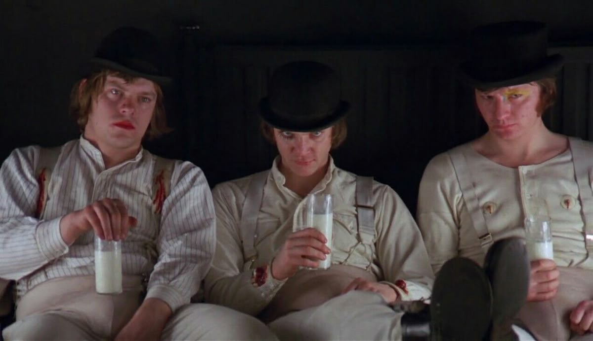
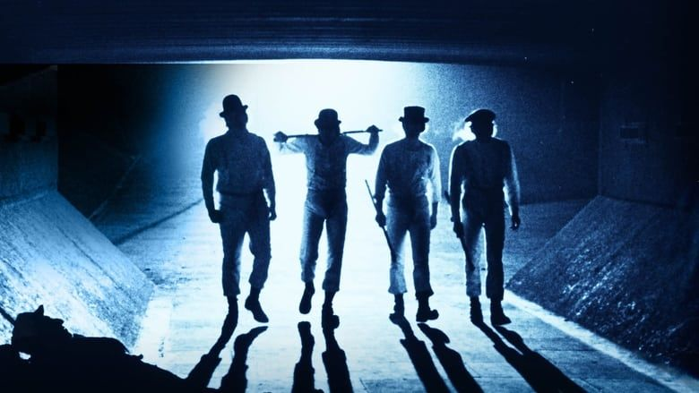

A Clockwork Orange
"A Clockwork Orange" is one of my favorite movies because it mixes deep ideas with a bold, unforgettable style. It explores human freedom, morality, and the dark side of society in a way that is both shocking and meaningful.
The movie's visuals, characters and intense atmosphere make it stand out from anything else I've watched. It's a film that stays in your mind long after it ends, making you question what “good” and “evil” truly mean.
I love how the film challenges the viewer, showing that forcing someone to be “good” can be just as cruel as allowing them to choose “bad.” It's disturbing, artistic, and thought-provoking - exactly the kind of movie that leaves an impact.